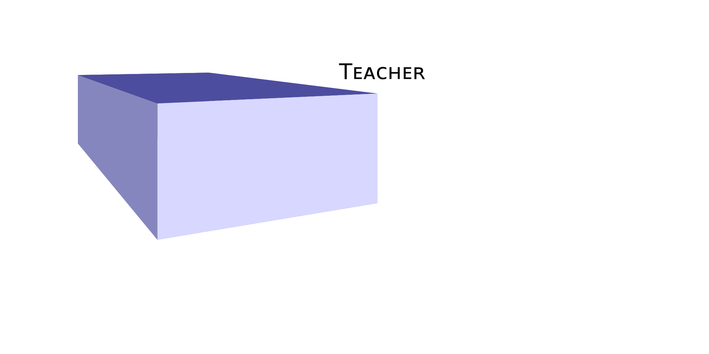

Distilling Neural Networks for Greener and Faster Dependency Parsing
Mark Anderson and Carlos Gómez-Rodríguez
Slow and out of fashion
English Penn Treebank
| Speed (sent/s) | Attachment Scores | |||
|---|---|---|---|---|
| GPU | CPU | UAS | LAS | |
| Pointer-TD (Ma et al., 2018) | - | 10.2 | 95.87 | 94.19 |
| Pointer-LR (F-G and G-R, 2019)1 | - | 23.1 | 96.04 | 94.43 |
| HPSG (Zhou and Zhao, 2019) | 158.7 | - | 96.09 | 94.68 |
| BIST - Transition (Kiperwasser and Goldberg, 2016) | - | 76(1)‡ | 93.9 | 91.9 |
| BIST - Graph (Kiperwasser and Goldberg, 2016) | - | 80(0)‡ | 93.1 | 91.0 |
| Biaffine (Dozat and Manning, 2017) | 411 | - | 95.74 | 94.08 |
| CM (Chen and Manning, 2014) | - | 654 | 91.80 | 89.60 |
| SeqLab (Strzyz et al., 2019) | 648(20)‡ | 101(2)‡ | 93.67 | 91.72 |
Still slow, but a little more fashionable
English Penn Treebank
| Speed (sent/s) | Attachment Scores | |||
|---|---|---|---|---|
| GPU | CPU | UAS | LAS | |
| UUParser (Smith et al., 2018) | - | 42(1) | 94.63 | 92.77 |
| Biaffine (PyTorch)1 | 1003(3) | 53(0) | 95.74 | 94.07 |
| SeqLab (Strzyz et al., 2019) | 1064(13) | 99(1) | 93.46 | 91.49 |
| Biaffine Distilled-20 | 1189(4) | 391(2) | 92.84 | 90.73 |
| Biaffine Distilled-40 | 1153(3) | 96(0) | 94.59 | 92.64 |
| Biaffine Distilled-60 | 1112(6) | 71(1) | 94.78 | 92.86 |
| Biaffine Distilled-80 | 1033(5) | 61(0) | 94.84 | 92.95 |
Teacher-Student Distillation
Treebanks
Universal Dependency Treebanks v2.4 (Nivre et al., 2019)
-
Ancient Greek Perseus
Indo-European, Greek
11K sents, 14.9 mean length, mDD 4.1
-
Chinese GSD
Sino-Tibetan, Sinitic
4K sents, 25.7 mean length, mDD 4.7
-
English EWT
Indo-European, Germanic
13K sents, 17.3 mean length, mDD 3.7
-
Finnish TDT
Uralic, Finnic
12K sents, 14.3 mean length, mDD 3.4
-
Hebrew HTB
Afro-Asiatic, Semitic
5K sents, 27.3 mean length, mDD 3.9
-
Russian GSD
Indo-European, Balto-Slavic
4K sents, 20.5 mean length, mDD 3.5
-
Tamil TTB
Dravidian, Southern
400 sents, 16.8 mean length, mDD 3.5
-
Uyghur UDT
Turkic, Karluk
2K sents, 12.6 mean length, mDD 3.5
-
Wolof WTB
Niger-Congo, Senegambian
1K sents, 20.8 mean length, mDD 3.5
Greener, aye?
The Bane of Real Trees1
Training GPU energy consumption.
From Dehouck et al., 2020 using Arabic PADT, Dutch Alpino & LassySmall, Finnish TDT, and Russian SynTagRus.
Energy Cost at Runtime
| Energy (kJ) | |||||
|---|---|---|---|---|---|
| Full | D-80 | D-60 | D-40 | D-20 | |
| inference only | 0.32 | 0.31 | 0.27 | 0.25 | 0.24 |
| w/ model load | 6.91 | 6.70 | 6.90 | 5.95 | 3.67 |
Total energy consumption running parsers for each respective treebank (8K sentences in total). w/ model load includes the energy used while loading each model.
But it is faster?
GPU Parsing Speeds
D-20: 1.19x
CPU Parsing Speeds
D-20: 2.30x
At what cost?
Parsing Accuracy
Parsing Accuracy
D-20
D-80
Parsing Accuracy and Speed
Relenting to the PTB Bias
English Penn Treebank
| Speed (sent/s) | Attachment Scores | |||
|---|---|---|---|---|
| GPU | CPU | UAS | LAS | |
| UUParser (Smith et al., 2018) | - | 42(1) | 94.63 | 92.77 |
| Biaffine (PyTorch)1 | 1003(3) | 53(0) | 95.74 | 94.07 |
| SeqLab (Strzyz et al., 2019) | 1064(13) | 99(1) | 93.46 | 91.49 |
| Biaffine Distilled-20 | 1189(4) | 391(2) | 92.84 | 90.73 |
| Biaffine Distilled-40 | 1153(3) | 96(0) | 94.59 | 92.64 |
| Biaffine Distilled-60 | 1112(6) | 71(1) | 94.78 | 92.86 |
| Biaffine Distilled-80 | 1033(5) | 61(0) | 94.84 | 92.95 |
Concluding Remarks.
References
- Xuezhe Ma, Zecong Hu, Jingzhou Liu, Nanyun Peng,Graham Neubig, and Eduard Hovy. 2018. Stack-pointer networks for dependency parsing. In Proceedings of the ACL, pages 1403–1414.
- Daniel Fernández-González and Carlos Gómez-Rodrı́guez. 2019. Left-to-right dependency parsing with pointer networks. In Proceedings of NAACL-HLT, pages 710–716.
- Junru Zhou and Hai Zhao. 2019. Head-driven phrase structure grammar parsing on Penn Treebank. In Proceedings of ACL, pages 2396–2408.
- Eliyahu Kiperwasser and Yoav Goldberg. 2016. Simple and accurate dependency parsing using bidirectional LSTM feature representations. TACL 4:313–327.
- Timothy Dozat and Christopher D Manning. 2017. Deep biaffine attention for neural dependency parsing. ICLR
- Danqi Chen and Christopher Manning. 2014. A fast and accurate dependency parser using neural networks. In Proceedings of EMNLP, pages 740–750.
- Michalina Strzyz, David Vilares, and Carlos GómezRodrı́guez. 2019. Viable dependency parsing as sequence labeling. In Proceedings of NAACL-HLT, pages 717–723
- Aaron Smith, Miryam de Lhoneux, Sara Stymne, and Joakim Nivre. 2018. An investigation of the interactions between pre-trained word embeddings, character models and pos tags in dependency parsing. In Proceedings of EMNLP, pages 2711–2720.
- Joakim Nivre, Mitchell Abrams, Željko Agić, et al. 2019. Universal Dependencies 2.4. LINDAT/CLARIN digital library at ÚFAL, Faculty of Mathematics and Physics, Charles University.
- Miryam de Lhoneux, Sara Stymne, and Joakim Nivre. 2017. Old school vs. new school: Comparing transition-based parsers with and without neural network enhancement. In TLT, pages 99–110.
- Mathieu Dehouck, Mark Anderson, and Carlos Gómez-Rodrı́guez. 2020. Efficient EUD parsing. In Proceedings of the EUD Shared task at IWPT.